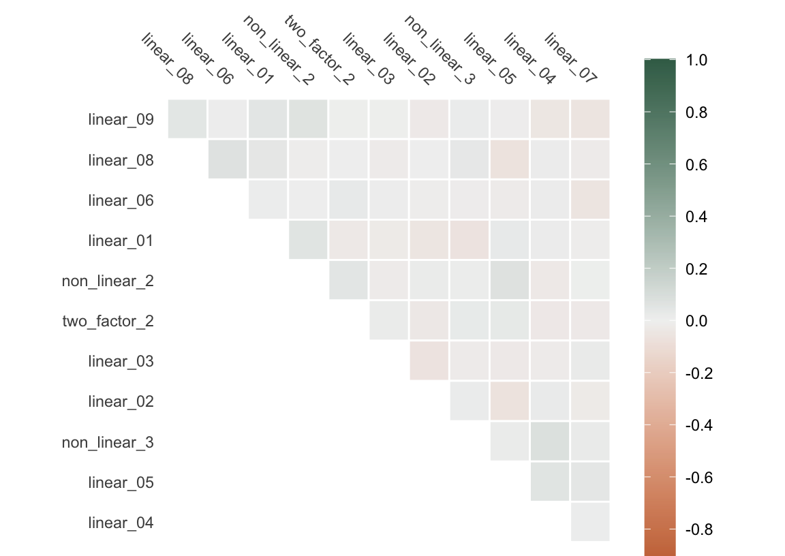
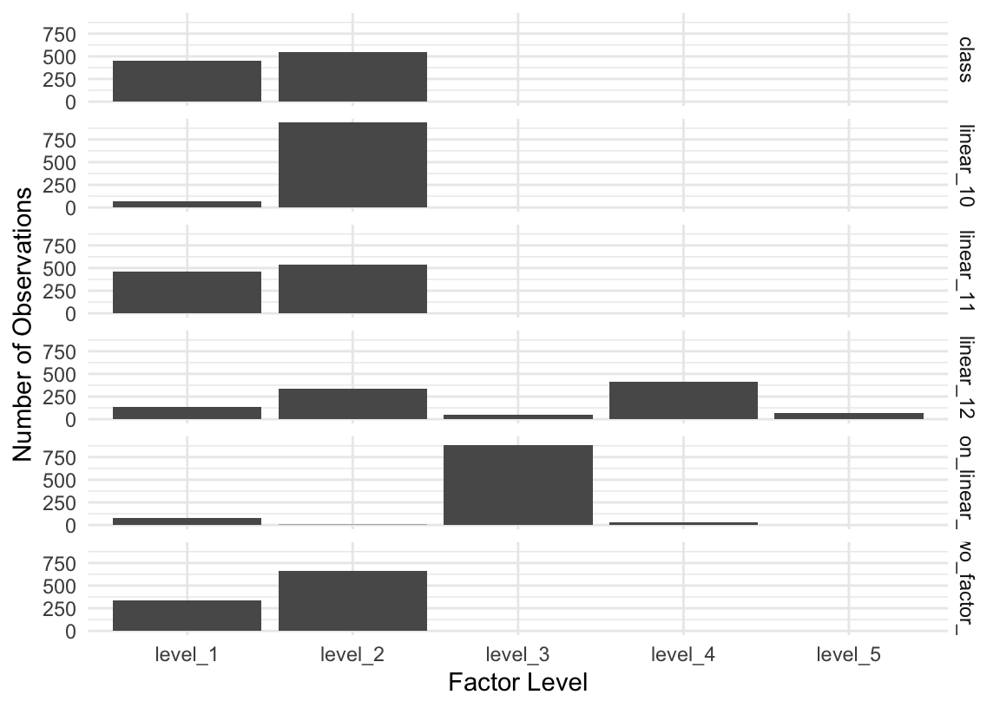

library(tidymodels)
library(future)
library(finetune)
library(bonsai)1 Introduction
Note
While this chapter is an early draft, it’s relatively complete and should be coherent for readers.
1.1 Demonstration
To demonstrate the massive impact that a few small pieces of intuition can have on execution time when evaluating machine learning models, I’ll run through a quick model tuning example. On the first go, I’ll lean on tidymodels’ default values and a simple grid search, and on the second, I’ll pull a few tricks out from my sleeves that will drastically reduce the time to evaluate models while only negligibly decreasing predictive performance.
1.1.1 Setup
First, loading a few needed packages:
For the purposes of this example, we’ll simulate a data set of 100,000 rows and 18 columns. The first column, class, is a binary outcome, and the remaining variables are a mix of numerics and factors.
set.seed(1)
d <- simulate_classification(1e5)
d# A tibble: 100,000 × 18
class two_factor_1 two_factor_2 non_linear_1 non_linear_2 non_linear_3
<fct> <fct> <dbl> <fct> <dbl> <dbl>
1 class_1 level_4 -0.336 level_2 0.595 0.724
2 class_2 level_4 0.468 level_3 0.831 0.493
3 class_2 level_4 -1.35 level_3 0.342 0.226
4 class_1 level_1 1.78 level_2 0.203 0.370
5 class_2 level_4 0.324 level_2 0.505 0.643
6 class_1 level_4 -0.707 level_2 0.202 0.798
7 class_2 level_4 0.0438 level_2 0.775 0.788
8 class_1 level_4 0.941 level_2 0.122 0.571
9 class_2 level_4 0.485 level_2 0.323 0.308
10 class_2 level_4 0.0648 level_2 0.385 0.191
# ℹ 99,990 more rows
# ℹ 12 more variables: linear_01 <dbl>, linear_02 <dbl>, linear_03 <dbl>,
# linear_04 <dbl>, linear_05 <dbl>, linear_06 <dbl>, linear_07 <dbl>,
# linear_08 <dbl>, linear_09 <dbl>, linear_10 <fct>, linear_11 <fct>,
# linear_12 <fct>See Section 1.4 for more information on this dataset.
We’ll first split the data into training and testing sets before generating a set of 10 folds from the training data for cross-validation.
set.seed(1)
d_split <- initial_split(d)
d_train <- training(d_split)
d_test <- testing(d_split)
d_folds <- vfold_cv(d_train)1.1.2 A first go
For my first go at tuning, I’ll tune a boosted tree model using grid search. By default, tidymodels will use XGBoost as the modeling engine. I’ll try out a few different values for learn_rate—a parameter that controls how drastically newly added trees impact predictions—and trees—the number of trees in the ensemble.
bt <-
boost_tree(learn_rate = tune(), trees = tune()) %>%
set_mode("classification")I’ll carry out a grid search using tune_grid(), trying out a bunch of different pairs of values for learn_rate and trees and seeing what sticks. The argument grid = 12 indicates that I want to try out 12 different combinations of values and will let tidymodels take care of exactly what those values are.
set.seed(1)
bm_basic <-
bench::mark(
basic =
tune_grid(
object = bt,
preprocessor = class ~ .,
resamples = d_folds,
grid = 12
)
)bench::mark() returns, among other things, a precise timing of how long this process takes.
bm_basic# A tibble: 1 × 3
expression median mem_alloc
* <bch:expr> <bch:tm> <bch:byt>
1 basic 3.68h 5.43GBHoly smokes! 3.68 hours is a good while. What all did tune_grid() do, though? First, let’s break down how many model fits actually happened. Since I’ve supplied grid = 12, we’re evaluating 12 possible model configurations. Each of those model configurations is evaluated against d_folds, a 10-fold cross validation object, meaning that each configuration is fitted 10 times. That’s 120 model fits! Further, consider that those fits happen on 9/10ths of the training data, or 67500 rows.
With a couple small changes, though, the time to tune this model can be drastically decreased.
1.1.3 A speedy go
To cut down on the time to evaluate these models, I’ll make 4 small modifications that require something like 7 lines of code.
First, I’ll evaluate in parallel: Almost all modern laptops have more than one CPU core, and distributing computations across them only takes 1 line of code with tidymodels.
plan(multisession, workers = 4)While this tuning process could benefit from distributing across many more cores than 4, I’ll just use 4 here to give a realistic picture of the kinds of speedups possible on a typical laptop.
Note
Parallelism is the subject of Chapter 3.
Then, we’ll use a clever grid; the tidymodels framework enables something called the “submodel trick,” a technique that will allow us to predict from many more models than we actually fit. Instead of just supplying grid = 12 and letting tidymodels generate the grid automatically, I’ll construct the grid myself.
set.seed(1)
bt_grid <- bt %>%
extract_parameter_set_dials() %>%
grid_regular(levels = 4)
Note
To learn more about the submodel trick, see Chapter 5.
Next, I’ll switch out the computational engine: Substituting XGBoost with another gradient-boosting model that can better handle some properties of this dataset will cut down on our fit time by a good bit.
bt_lgb <- bt %>% set_engine("lightgbm")
Note
Chapter 2 contains benchmarks and notes on the scaling properties of many of the modeling engines supported by tidymodels.
Finally, I’ll give up early on poorly-performing models: Rather than using grid search with tune_grid(), I’ll use a technique called racing that stops evaluating models when they seem to be performing poorly using the tune_race_anova() function.
set.seed(1)
bm_speedy <-
bench::mark(
speedy =
tune_race_anova(
object = bt_lgb,
preprocessor = class ~ .,
resamples = d_folds,
grid = bt_grid
)
)
Note
Alternative search strategies like racing are covered in detail in Chapter 4.
Checking out the new benchmarks:
bm_speedy# A tibble: 1 × 3
expression median mem_alloc
* <bch:expr> <bch:tm> <bch:byt>
1 speedy 1.52m 47.5MBThe total time to tune was reduced from 3.68 hours to 1.52 minutes—the second approach was 145 times faster than the first.
The first thing I’d wonder when seeing this result is how much of a penalty in predictive performance I’d suffer due to this transition. Let’s evaluate both of the top models from these tuning results on the test set. First, for the basic workflow:
fit_basic <-
select_best(bm_basic$result[[1]], metric = "roc_auc") %>%
finalize_workflow(workflow(class ~ ., bt), parameters = .) %>%
last_fit(split = d_split)collect_metrics(fit_basic)# A tibble: 3 × 4
.metric .estimator .estimate .config
<chr> <chr> <dbl> <chr>
1 accuracy binary 0.835 Preprocessor1_Model1
2 roc_auc binary 0.896 Preprocessor1_Model1
3 brier_class binary 0.119 Preprocessor1_Model1As for the quicker approach:
fit_speedy <-
select_best(bm_speedy$result[[1]], metric = "roc_auc") %>%
finalize_workflow(workflow(class ~ ., bt), parameters = .) %>%
last_fit(split = d_split)collect_metrics(fit_speedy)# A tibble: 3 × 4
.metric .estimator .estimate .config
<chr> <chr> <dbl> <chr>
1 accuracy binary 0.835 Preprocessor1_Model1
2 roc_auc binary 0.895 Preprocessor1_Model1
3 brier_class binary 0.120 Preprocessor1_Model1Virtually indistinguishable performance results in 0.7% of the time.
1.2 Our approach
This book is intended for tidymodels users who have been waiting too long for their code to run. I generally assume that users are familiar with data manipulation and visualization with the tidyverse as well as the basics of machine learning with tidymodels, like evaluating models against resamples using performance metrics. For the former, I recommend (Wickham, Çetinkaya-Rundel, and Grolemund 2023) for getting up to speed—for the latter, (Kuhn and Silge 2022). If you’re generally comfortable with the content in those books, you’re ready to go.
Modern laptops are remarkable. Users of tidymodels working on many machines made in the last few years are well-prepared to interactively develop machine learning models based on tens of millions of rows of data. That said, without the right information, it’s quite easy to mistakenly introduce performance issues that result in analyses on even tens of thousands of rows of data becoming too cumbersome to work with. Generally, the tidymodels framework attempts to guard users from making such mistakes and addressing them ourselves when they’re in our control. At the same time, many foundational and well-used approaches in classical machine learning have well-theorized adaptations that substantially cut down on the elapsed time while preserving predictive performance. The tidymodels framework implements many such adaptations and this book aims to surface them in a holistic and coherent way. Readers will come out of having read this book with a grab bag of one-liners that can cut down on elapsed time to develop machine learning models by orders of magnitude.
1.3 The hard part
To better understand how to cut down on the time to evaluate models with tidymodels, we need to understand a bit about how tidymodels works.
Like many other “unifying frameworks” for ML (mlr3, caret, scikit-learn(?)), the tidymodels framework itself does not implement the algorithms to train and predict from models. Instead, tidymodels provides a common interface to modeling engines: packages (or functions from packages) that provide the methods to fit() and predict().

The process of “translating” between the tidymodels and engine formats is illustrated in Figure 1.1. When fitting and predicting with tidymodels, some portion of the elapsed time to run code is due to the “translation” of the inputted unified code to the specific syntax that the engine expects, and some portion of it is due to the translation of what the engine returns to the unified output returned by tidymodels; these portions are in the tidymodels team’s control. The rest of the elapsed time occurs inside of the modeling engine’s code.
The portions of the elapsed time that are in the tidymodels team’s control are shown in green, and I’ll refer to them in this book as “overhead.” The overhead of tidymodels in terms of elapsed time is relatively constant with respect to the size of training data. This overhead consists of tasks like checking data types, handling errors and warnings, and—most importantly—programmatically assembling calls to engine functions.
The portion of the elapsed time shown in orange represents the actual training of (or predicting from) the model. This portion is implemented by the modeling engine and is thus not in the tidymodels team’s control. In contrast to overhead, the elapsed time of this code is very much sensitive to the size of the inputted data; depending on the engine, increases in the number of rows or columns of training or testing data may drastically increase the time to train or predict from a given model.
Note
The algorithmic complexity of the models implemented by these engines is well-understood in many cases. At the same time, the behavior of elapsed time for some engine implementations often differs greatly from what theory would lead one to believe. Regressions in modeling code may introduce undue slowdowns and, conversely, performance optimizations that lead to elapsed times that scale better than theory would suggest may be the very reason for the existence of some engines.
As shown in Figure 1.2, the proportion of elapsed time that overhead is responsible for depends on how quickly the engine can fit or predict for a given dataset.

Since the absolute overhead of tidymodels’ translation is relatively constant, overhead is only a substantial portion of elapsed time when models fit or predict very quickly. For a linear model fitted on 30 data points with lm(), this overhead is continuously benchmarked to remain under 2/3. That is, absolute worst-case, fitting a model with tidymodels takes three times longer than using the engine interface itself. However, this overhead approaches fractions of a percent for fits on even 10,000 rows for many engines. Thus, a focus on reducing the elapsed time of overhead is valuable in the sense that the framework ought not to unintentionally introduce regressions that cause overhead to scale with the size of training data, but in general, the hard part of reducing elapsed time when evaluating models is reducing the elapsed time for computations carried out by the modeling engine.
The next question is then how could tidymodels cut down on elapsed time for modeling engines that it doesn’t own? To answer this question, let’s revisit the applied example from Section 1.1.2. In that first example, the code does some translation to the engine’s syntax, sets up some error handling, and then fits and predicts from 120 models.

Figure 1.3 depicts this process, where we evaluate all 120 models in order. Each white dot in the engine portion of the elapsed time represents another round of fitting and predicting with engine. Remember that in reality, for even modest dataset sizes, the green portions representing tidymodels overhead are much smaller by proportion than represented.
In Section 1.1.3, the first thing I did was introduce a parallel backend. Distributing engine fits across available cores is itself a gamechanger, as illustrated in Figure 1.4.

Then, switching out computational engines for a more performant alternative further reduces elapsed time, as shown in Figure 1.5.

Finally, as depicted in Figure 1.6, the submodel trick described in Chapter 5 and racing described in Chapter 4 eliminate a substantial portion of the engine fits.

The tidymodels team devotes substantial energy to ensuring support for the most performant parallelization technologies, modeling engines, model-specific optimizations, and search techniques. This book will demonstrate how to best make use of these features to reduce the time needed to evaluate machine learning models.
1.4 Datasets
In Section 1.1.1, I used a function simulate_classification() to generate data. This is one of two functions, the other being simulate_regression(), that create the data underlying many of the experiments in this book.
These two functions are adaptations of their similarly named friends sim_classification() and sim_regression() from the modeldata package. They make small changes to those function—namely, introducing factor predictors with some tricky distributions—that surface slowdowns with some modeling engines.
Provided a number of rows, sim_classification() generates a tibble with that many rows and 16 columns:
d_class <- simulate_classification(1000)
d_class# A tibble: 1,000 × 18
class two_factor_1 two_factor_2 non_linear_1 non_linear_2 non_linear_3
<fct> <fct> <dbl> <fct> <dbl> <dbl>
1 class_1 level_2 -0.133 level_3 0.0355 0.770
2 class_1 level_2 0.894 level_3 0.356 0.690
3 class_2 level_2 -1.59 level_4 0.249 0.650
4 class_1 level_1 2.17 level_3 0.879 0.0747
5 class_1 level_2 0.464 level_1 0.318 0.903
6 class_2 level_2 -2.04 level_3 0.321 0.133
7 class_2 level_2 1.11 level_3 0.848 0.211
8 class_2 level_1 -0.183 level_3 0.381 0.155
9 class_2 level_1 0.00202 level_3 0.275 0.0545
10 class_2 level_2 0.198 level_3 0.918 0.715
# ℹ 990 more rows
# ℹ 12 more variables: linear_01 <dbl>, linear_02 <dbl>, linear_03 <dbl>,
# linear_04 <dbl>, linear_05 <dbl>, linear_06 <dbl>, linear_07 <dbl>,
# linear_08 <dbl>, linear_09 <dbl>, linear_10 <fct>, linear_11 <fct>,
# linear_12 <fct>The leftmost column, class, is a binary outcome variable, and the remaining columns are predictor variables. The predictors throw a few curveballs at the modeling functions we’ll benchmark in this book.
For one, the predictors are moderately correlated. Correlated predictors can lead to unstable parameter estimates and can make the model more sensitive to small changes in the data. Further, correlated predictors may lead to slower convergence in gradient descent processes (like those driving gradient-boosted trees like XGBoost and LightGBM), as the resulting elongated and narrow surface of loss functions causes the algorithm to zigzag towards the optimum value, significantly increasing the training time along the way.

Secondly, there are a number of factor predictors. Some modeling engines experience slower training times with many factor predictors for a variety of reasons. For one, most modeling engines ultimately implement training routines on numeric matrices, requiring that factor predictors are somehow encoded as numbers. Most often in R, this is in the form of treatment contrasts, where an \(n\)-length factor with \(l\) levels is represented as an \(n ~x~ l-1\) matrix composed of zeroes and ones. Each column is referred to as a dummy variable. The first column has value \(1\) when the \(i\)-th entry of the factor is the second level, zero otherwise. The second column has value \(1\) when the \(i\)-th entry of the factor is the third level, zero otherwise. We know that the \(i\)-th entry of the first took its first level if all of the entries in the \(i\)th column of the resulting matrix are zero. While this representation of a factor is relatively straightforward, it’s quite memory intensive; a factor with 100 levels ultimately will require a 99-column matrix to be allocated in order to be included in a model. While many modeling engines in R assume that factors will be encoded as treatment constrasts, different modeling engines have different approaches to processing factor variables, some more efficient than others. More on this in Chapter 7, in particular.
Original factor
x
1 a
2 b
3 cFactor with treatment contrasts
xb xc
1 0 0
2 1 0
3 0 1Further, many of those factor variables have a class imbalance; that is, some levels of the factor occur much more often than others. Some models may struggle to learn from the less frequently-occurring classes, potentially requiring more iterations of descent processes for some models to converge. Even when this is not the case, it may be varyingly “worth it” in terms of memory usage to allocate a dummy variable to a factor level that only appears a couple times in a dataset with many rows.

class, some factor levels are much more common than others in the predictors, which can lead to instability in many modeling algorithms.The regression dataset looks quite similar.
d_reg <- simulate_regression(1000)
d_reg# A tibble: 1,000 × 16
outcome predictor_01 predictor_02 predictor_03 predictor_04 predictor_05
<dbl> <dbl> <dbl> <dbl> <dbl> <dbl>
1 6.36 -2.45 2.46 2.85 2.16 -1.28
2 -2.11 -4.08 1.64 -3.49 3.21 -3.18
3 26.0 -4.95 1.77 -2.21 3.35 5.29
4 -1.31 -3.36 -2.95 -4.05 -0.911 5.88
5 53.8 0.604 -6.35 -4.89 -5.96 -7.86
6 -32.1 3.53 -6.56 2.06 -0.965 -2.11
7 24.8 2.59 1.68 -1.88 3.10 -1.35
8 11.7 3.79 -1.46 -2.23 -0.467 -0.662
9 7.19 4.88 1.08 4.17 3.01 -4.15
10 9.43 2.78 -0.441 1.62 0.452 1.74
# ℹ 990 more rows
# ℹ 10 more variables: predictor_06 <dbl>, predictor_07 <dbl>,
# predictor_08 <dbl>, predictor_09 <dbl>, predictor_10 <fct>,
# predictor_11 <fct>, predictor_12 <fct>, predictor_13 <fct>,
# predictor_14 <fct>, predictor_15 <fct>The left-most column, outcome, is a numeric outcome, and the remaining 15 columns are a mix of numeric and factor. The same story related to correlation and tricky factor imbalances goes for the regression dataset. Demonstrating that is homework.